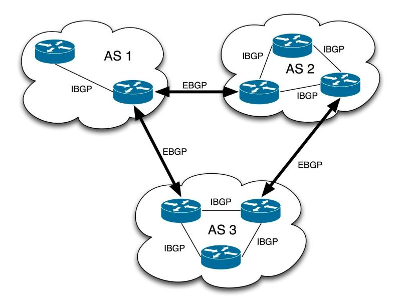

边界网关协议
@BGP- BGP - Border Gateway Protocol
- 边界网关协议
- 负责在不同的自治系统 AS - Autonomous System 之间交换路由信息
- 是构成互联网骨干网络的核心协议
- 在AS边界部署边界路由器，AS之间才可以交换可达路由信息
- 使用传输控制协议 TCP（端口179） - 可靠、面向连接
- 分类 Type
- eBGP - external BGP
在不同自治系统之间的BGP对等体（Peers）之间运行
eBGP邻居通常直连（物理上或逻辑上通过单跳），并且必须位于不同的AS中
eBGP会话默认将路由的下一跳（NEXT_HOP）属性修改为发送方的接口地址
边界路由器之间使用 eBGP 交换信息
- iBGP - internal BGP
在同一自治系统内部的BGP对等体之间运行
iBGP用于在AS内部传播从eBGP学到的外部路由
边界路由器使用 iBGP 向其所在AS内的所有路由器转发路由信息
要求AS内的所有路由器全连通
- BGP路由
- 表示：经过NEXT-HOP，可达AS-PATH的 Prefix 网络
- Prefix：目标网络/网络前缀
- AS-PATH：经过的AS列表
- NEXT-HOP：下一条路由器
- 路径属性 Path Attributes
- BGP决策的关键
- 每个路由都附带一组属性，用于影响路由选择
- AS_PATH：经过的AS列表，用于防环和选路（越短越好）
- NEXT_HOP：下一跳IP地址
- LOCAL_PREF：本地优先级，用于决定离开本AS的最佳出口，默认值100，越大越优（仅在iBGP内传递）
- MED (Multi-Exit Discriminator)：用于影响进入本AS的流量选择哪个入口，默认值0，越小越优（在eBGP间传递）
- ORIGIN：路由来源（IGP > EGP > Incomplete）
- WEIGHT：Cisco私有属性，仅本地有效，值越大越优
- 路由选择
- 本地偏好 (local preference) 值最高的路由 （默认值=100）
由管理员本地设置
无法实现负载均衡
AS1 → AS2 → AS4；链路负荷过重
AS1 → AS3 → AS4
- AS 跳数最小的路由
未必是最佳路由
AS1 → AS5：AS1 → AS2 → AS3 → AS5
AS1 → AS5：AS1 → AS4 → AS5；内部转发可能更多
- 使用热土豆路由选择算法
尽快转发出去 - 分组在 AS 内的转发次数最少
R2 → R3
R1 → R4
- 路由器 BGP ID 数值最小的路由。具有多个接口的路由器有多个 IP 地址，BGP ID 就使用该路由器的 IP 地址中数值最大的一个
- 特点 Feature
- 高度可扩展：适用于大规模网络，如互联网骨干
- 策略控制能力强：通过丰富的属性和过滤机制，网络管理员可以精细控制路由的发布和接收
- 收敛速度慢：相比IGP，BGP的收敛较慢，但更注重稳定性
- 基于TCP：保证了可靠传输，不需要像RIP那样周期性广播
- 增量更新：只在网络变化时发送增量更新，节省带宽
- 应用 Application
- ISP之间互联：不同运营商通过eBGP交换客户路由
- 企业与ISP互联：大型企业通过BGP向ISP宣告自己的公网IP地址块
- 多宿主网络 Multi-homing ：一个AS连接到多个ISP，通过BGP实现冗余和负载均衡
- CDN和云服务提供商：用于在全球范围分发内容和服务

| prefix | AS-PATH | NEXT-HOP |
AS-PATH和NEXT-HOP都是BGP属性